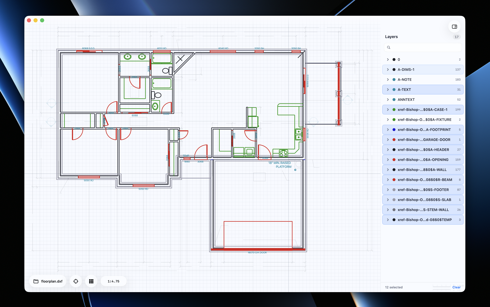

01
Eleven DXF entities, decoded
LINE, CIRCLE, ARC, POLYLINE, TEXT, ELLIPSE, SPLINE, HATCH, DIMENSION, LEADER, INSERT. Hatches keep their patterns; polygons keep their holes.
A native macOS reader for AutoCAD drawings. Fast, free, and quiet.

floorplan.dxf · 17 layers · 1:4.75
LINE, CIRCLE, ARC, POLYLINE, TEXT, ELLIPSE, SPLINE, HATCH, DIMENSION, LEADER, INSERT. Hatches keep their patterns; polygons keep their holes.
Toggle visibility, recolor, search by name. Drawings keep the layer order the draftsman intended.
A live scale bar in millimetres, centimetres, or metres. Zoom with pinch or ⌘-scroll. Press F to fit.
Parse a 30-MB drawing without freezing the window. Progress is reported live; the UI stays responsive.
SwiftUI and Liquid Glass on macOS 26. Finder double-click, drag-onto-Dock, Open Recent, VoiceOver. Just a Mac app.
Sparkle checks for new versions in the background. EdDSA-signed, no telemetry, no account.
Grab it on Gumroad and pay whatever feels right — even nothing. If you'd rather skip the checkout, the same build is free on GitHub. Either way, it's the same app.